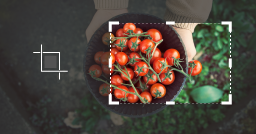
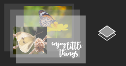

- Fundamentos basicos

Abrir imágenes
Abre imágenes existentes o crea otras nuevas.
En la barra de menús, selecciona Archivo > Abrirpara abrir imágenes existentes.
En la barra de menús, selecciona Archivo > Nuevo para crear una imagen nueva desde cero. Selecciona un ajuste preestablecido de documento. Puedes personalizar los ajustes preestablecidos introduciendo los valores que prefieras en campos como Anchura y Altura.
Introducción al área de trabajo
Familiarízate con el área de trabajo.
La barra de menús, en la parte superior de la ventana, muestra los menús Archivo, Edición, Imagen y otros que te permiten acceder a gran variedad de comandos, ajustes y paneles.
La barra de opciones, que se encuentra debajo de la barra de menús, muestra las opciones de la herramienta con la que estés trabajando en un momento concreto.
El panel Herramientas, a la izquierda, contiene herramientas para editar imágenes y crear ilustraciones. Las herramientas similares se agrupan juntas. Puedes acceder a un grupo de herramientas relacionadas haciendo clic en una herramienta del panel y manteniéndola pulsada.
Los paneles están situados a la derecha y, entre ellos, se encuentran Color, Capas, Propiedades, que contienen una gran cantidad de controles para trabajar en las imágenes. Puedes ver la lista completa de paneles en el menú Ventana.
La ventana de documento, que es el espacio del centro, muestra el archivo en el que estás trabajando en ese momento. Cuando hay varios documentos abiertos, estos se muestran en pestañas en la parte superior de la ventana de documento.
Para cerrar una imagen, selecciona Archivo > Cerrar.
Zoom y desplazamiento
Modifica la visualización de una imagen.
La herramienta Zoom se encuentra en el panel Herramientas. Cambia del zoom de aumento al zoom de reducción en la barra de opciones.
La herramienta Mano también se encuentra en el panel Herramientas y te permite desplazarte por imágenes grandes o aumentadas.
Deshacer un comando
Deshaz uno o varios pasos y utiliza el panel Historia.
Para deshacer la última acción que has llevado a cabo, selecciona Edición > Deshacer o pulsa Control + Z en Windows o Command + Z en macOS.
Para rehacer la última acción que has llevado a cabo, selecciona Edición > Rehacer o, de nuevo, pulsa Control + Z en Windows o Command + Z en macOS.
Para deshacer varios pasos, selecciona Edición > Paso atrás varias veces o selecciona un paso en el panel Historia.
Guardar el trabajo realizado
Utiliza los comandos de guardado.
Selecciona Archivo > Guardar o Archivo > Guardar como.
Cuando se guarda una imagen en formato de Photoshop (.psd), se conservan las capas, el texto y otras propiedades editables de Photoshop. Es preferible que guardes las imágenes en formato PSD cuando todavía estás trabajando en ellas.
Guardar en formatos como JPEG (.jpg) o PNG (.png) permite almacenar una imagen estándar que se puede compartir, abrir en otros programas y publicar en la Web. Cuando termines de editar la imagen, guarda una copia también en uno de estos formatos.
- Tamaño de la imagen

Cambiar el tamaño de una imagen
Selecciona Imagen > Tamaño de imagen.
Establece la medida de la anchura y la altura en píxeles para las imágenes que quieras utilizar en la Web o en pulgadas (o centímetros) para las imágenes que quieras imprimir. Asegúrate de que el icono de enlace está activado para que se mantengan las proporciones en las medidas. De esta forma, la altura se ajusta automáticamente cuando se modifica la anchura y viceversa.
Selecciona Remuestrear para modificar el número de píxeles de la imagen. Así, cambiará el tamaño de la imagen.
Haz clic en Aceptar.
Configuración de la resolución
Modifica la resolución de una imagen.
Selecciona Imagen > Tamaño de imagen. En este cuadro de diálogo, “resolución” se refiere al número de píxeles de imagen que se asignarán a cada pulgada cuando se imprima la imagen.
Deja las medidas de la anchura y la altura establecidas en pulgadas si deseas imprimir la imagen.
Desactiva la opción Remuestrear para mantener la cantidad original de píxeles de imagen.
En el campo Resolución, establece el número de píxeles por pulgada en 300 para imprimir la imagen en una impresora de inyección de tinta de sobremesa común. De este modo, se modifica la cantidad de pulgadas en los campos de anchura y altura.
Haz clic en Aceptar.
Recortar y enderezar una imagen
Utiliza la herramienta Recortar.
Selecciona la herramienta Recortar del panel Herramientas. Aparece un rectángulo de recorte.
Arrastra cualquier borde o esquina para ajustar el tamaño y la forma del rectángulo de recorte.
Arrastra la imagen dentro del rectángulo de recorte para cuadrarla en ese espacio.
Sitúate cerca de una esquina del rectángulo de recorte y arrastra para girar la imagen o enderezarla.
Haz clic en la marca de comprobación de la barra de opciones o pulsa Entrar (en Windows) o Return (en macOS) para realizar el recorte.
Ampliación del lienzo
Añade espacio al lienzo del documento.
Selecciona Imagen > Tamaño de lienzo.
Para ampliar el lienzo, introduce la cantidad de anchura y altura que deseas añadir. Establece la anchura y la altura en píxeles si vas a utilizar la imagen en la Web o en pulgadas si vas a imprimirla.
Selecciona Relativo y elige un punto de anclaje en el diagrama del lienzo. Las flechas señalan los lados por los que se ampliará el lienzo.
Haz clic en Aceptar.
- Capas

Información sobre las capas
Aprende qué son las capas y por qué resultan tan útiles.
Las capas contienen imágenes, texto u objetos que componen un archivo con capas. Te permiten mover el contenido, editarlo y trabajar con él en una capa sin que los efectos se apliquen al contenido de otras capas.
Las capas se apilan en el panel Capas, que, por lo general, se encuentra en la esquina inferior derecha del área de trabajo. Si no puedes ver el panel Capas, selecciona Ventana > Capas.
En el panel Capas, haz clic en el icono de ojo que se encuentra a la izquierda de cada capa para ocultar su contenido. Vuelve a hacer clic en la misma área para mostrar el contenido. Este método constituye una buena forma de recordar qué elementos del contenido se encuentran en cada capa.
Para modificar una capa, debe estar seleccionada. En el panel Capas, haz clic una vez a la derecha del nombre de una capa para seleccionarla. Para añadir más capas a la selección, mantén pulsada la tecla Control (Ctrl) en Windows o Command (cmd) en macOS a la vez que haces clic en otras capas.
Conceptos básicos de las capas
Aprende a modificar el orden de las capas, crear algunas nuevas, cambiar su opacidad y eliminarlas.
Arrastra una capa hacia arriba o hacia abajo en el panel Capas para modificar el orden de los objetos de la imagen que contiene cada una.
Haz clic en el icono Crear una capa nueva en la parte inferior del panel Capas para crear una nueva. Esta capa será transparente hasta que se le añada algún elemento.
Para darle un nombre a una capa, haz doble clic en su nombre actual. Escribe un nuevo nombre para esa capa. Pulse Entrar (Windows) o Return (macOS).
Para modificar la opacidad de una capa, selecciona la que quieras en el panel Capas y arrastra el regulador Opacidad, situado cerca de la parte superior de este panel, para aumentar la transparencia de una capa o reducirla.
Para eliminar una capa, selecciona la que quieras en el panel Capas y pulsa Retroceso (Windows) o Delete (macOS).
Redimensionar una capa
Modifica el tamaño del contenido de las capas seleccionadas.
En el panel Capas, selecciona una capa que contenga imágenes u objetos que deseas redimensionar. También puedes seleccionar varias a la vez.
Selecciona Edición > Transformación libre. Se mostrará un borde de transformación alrededor del contenido de las capas seleccionadas. Mantén pulsada la tecla Mayús (o Shift) para evitar que se distorsione el contenido y arrastra los vértices o bordes hasta que se alcance el tamaño deseado. Arrastra el cursor dentro de los límites del borde de transformación para mover el contenido por la imagen. Arrastra el cursor fuera de los límites del borde de transformación para rotar el contenido.
Haz clic en la marca de comprobación de la barra de opciones o pulsa Entrar (en Windows) o Return (en macOS) para aceptar los cambios.
Añadir imágenes a un diseño con capas
Añade más imágenes a un diseño, cada una en una capa individual.
Selecciona Archivo > Colocar elemento incrustado, busca un archivo de imagen en el Explorador de archivos (Windows) o en Finder (macOS) y haz clic en Colocar.
Mantén pulsada la tecla Mayús (o Shift) para evitar que se distorsione la imagen y arrastra los vértices del borde de la imagen añadida para redimensionarla.
Arrastra el cursor dentro de los límites del borde para colocar la imagen añadida en el lugar que desees.
Haz clic en la marca de comprobación de la barra de opciones para finalizar el proceso de colocación. Se creará una nueva capa de forma automática que contenga la imagen añadida.
Desbloqueo de la capa de fondo
Aprende cómo funciona la capa de fondo.
Dado que la capa de fondo está bloqueada, no se podrá mover en la ventana de documento ni se podrá cambiar su posición en el panel Capas; tampoco se le podrán aplicar algunas funciones de edición.
Para convertir la capa de fondo en una capa normal, haz clic en el icono de candado que se encuentra a la derecha del nombre de la capa en el panel Capas.
- Calidad de la imagen

Ajuste del brillo y el contraste
Ajusta la exposición de la imagen.
En la barra de menús, selecciona Imagen > Ajustes > Brillo/contraste.
Ajusta el regulador de brillo para modificar el brillo general de la imagen. Ajusta el regulador de contraste para aumentar o reducir el contraste de la imagen.
Haz clic en Aceptar. El ajuste se aplicará únicamente a la capa seleccionada.
Ajuste de la intensidad del color
En la barra de menús, selecciona Imagen > Ajustes > Intensidad.
Haz tus propias pruebas ajustando los reguladores. El regulador de intensidad modifica la intensidad de los colores. Esta modificación altera en mayor medida los colores que en la imagen se veían más apagados. El regulador de saturación aumenta la intensidad de todos los colores de la imagen.
Haz clic en Aceptar cuando hayas terminado.
Ajuste del tono y la saturación
En la barra de menús, selecciona Imagen > Ajustes > Tono/saturación.
Haz tus propias pruebas ajustando los reguladores de tono, saturación y luminosidad. Los cambios se aplicarán a todos los colores de la imagen. El regulador de tono modifica los colores de una imagen. El regulador de saturación modifica la intensidad de los colores de una imagen. El regulador de luminosidad modifica el brillo de los colores de una imagen.
Para modificar un único color con estos reguladores, dirígete en primer lugar al menú desplegable de la esquina superior izquierda del cuadro de diálogo Tono/saturación y selecciona una gama de colores, como los amarillos. Ajusta los reguladores de tono, saturación o luminosidad. Estos cambios solo se aplicarán a la gama de colores seleccionada en cualquier parte de la imagen en la que estén presentes esos colores.
Haz clic en Aceptar cuando hayas terminado.
Uso de las capas de ajuste
Las capas de ajuste te brindan más flexibilidad de edición. Te permiten volver a editar los ajustes que has aplicado a la imagen y proteger la versión original de los cambios directos. Prueba la capa de ajuste Blanco y negro para hacerte una idea de cómo funcionan las capas de ajuste.
En el panel Capas, selecciona la capa de imagen que quieres modificar con el ajuste.
En la parte inferior del panel Capas, haz clic en el icono Crear nueva capa de relleno o ajuste y selecciona la opción Blanco y negro del menú desplegable. La nueva capa de ajuste aparecerá en el panel Capas, justo encima de la capa de imagen que has seleccionado. Esta capa de ajuste modificará únicamente las capas que se encuentren debajo de ella.
El panel Propiedades se abrirá de forma automática para mostrar los controles de este ajuste. Habrá distintos controles en el panel Propiedades según la capa de ajuste que se haya escogido.
Con la capa de ajuste Blanco y negro seleccionada en el panel Capas, personaliza la conversión de tu imagen de color a blanco y negro mediante los controles del panel Propiedades.
Haz tus propias pruebas ajustando los reguladores. Haz clic en las flechas dobles de la parte superior del panel Propiedades para cerrar el panel cuando hayas acabado.